03-1-1 個案狀態管理 - 03臨床病史與處置
(左區塊) 就醫清單

項目

內容

說明
瀏覽篩選條件
1. 年份
- 近五年
- 2026
- 2025
- 2024
- 2023
- 2022
- 2021
2. 類型
- 全部類型
- 門診
- 急診
- 住院
3. 科別
- 全部科別
- …
4. 設定篩選條件後可瀏覽的資料筆數
1. 資料來源：HIS 門診醫囑＞門急病歷及住院醫囑＞住院病歷。
2. 多項篩選組合以and篩選條件
3. 年份：可選擇瀏覽今年往前-5年的就醫時間。
4. 類型：依病患實際有就醫記錄的類型來顯示，不要有沒對應內容的選項，住院只顯示入院時間，並將同一次住院至出院之間的記錄呈現在右側區塊對應的項目頁面中。
5. 科別：依病患實際有就醫記錄的科別來顯示，。
病患就醫清單
1. 就醫日期
2. 類型
3. 科別名稱
4. 手術
5. 癌症
6. 檢驗
1. 依日期排序，由新排列到舊。
2. 點擊單列資料觸發onfocus狀態，底色變為 #E4EDF5。
3. 若就醫當日有進行手術、癌症治療(含放療及任一種形式的化療)或檢驗(生化、血液、免疫任一種)，在相對應的格子裡顯示一個黑點。
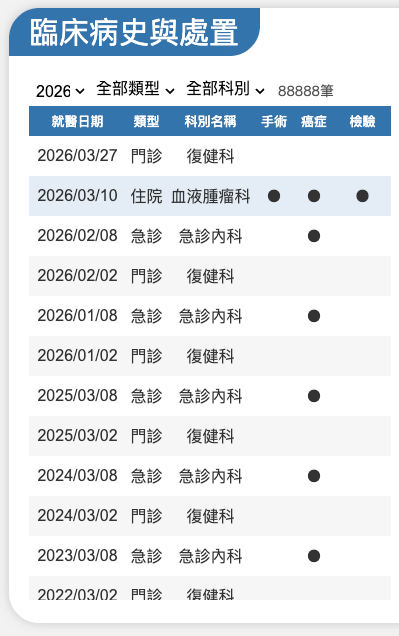
瀏覽資料篩選項目
點擊單列，右側出現對應當日的相關資料
項目
內容
說明

就醫時間

1. 住院：入院日期 yyyy/mm/dd hh:mm:ss 及出院日期 yyyy/mm/dd hh:mm:ss
2. 急診：就醫日期 yyyy/mm/dd hh:mm:ss
3. 門診：就醫日期 yyyy/mm/dd hh:mm:ss

1. 資料來源：HIS 門診醫囑＞門急病歷及住院醫囑＞住院病歷。
2. 門／急診顯示當次就醫日期、住院則將當次住院-出院整合成一筆左側的就醫清單。

內容
門診：S、O、A、P
1. 資料來源：HIS 門急診病歷
2. 分別將S、O、A、Plan頁籤中的資料載入，由治療師點選”S”、”O”、”A”、”P”按鈕控制顯示或隱藏，預設是全顯示。

急診：總覽、首頁、S、O、A
1. 資料來源：HIS 門急診病歷
2. 分別將總覽、首頁、S、O、A頁籤中的資料載入，由治療師點選”總覽”、”首頁”、”S”、”O”、”A”按鈕控制顯示或隱藏，預設”總覽”顯示，其他項目隱藏。
住院：
- 第一部份內容：Admission Note
- 第二部份內容：Progress Note
1. 資料來源：HIS 住院病歷
2. 住院醫囑的Admission Note：內容全部收合在”Admission Note”按鈕中，可手動點按鈕控制內容的顯示或隱藏，預設隱藏。
3. 住院醫囑的Progress Note：由Free typing的內容中，分拆解出S：O：A：P：的內容，在對應的”S”、”O”、”A”、"P"按鈕區塊裡，治療師可手動控制區塊內容的顯示或隱藏；如果內容中都沒有S：O：A：P：，則將全部的文字直接顯示在"其他"的按鈕中。
4. Progress Note內容依日期排序，由新排列到舊，預設最新的資料S、O、P、A及其他全顯示，較舊日期的資料預設是不顯示的狀態。
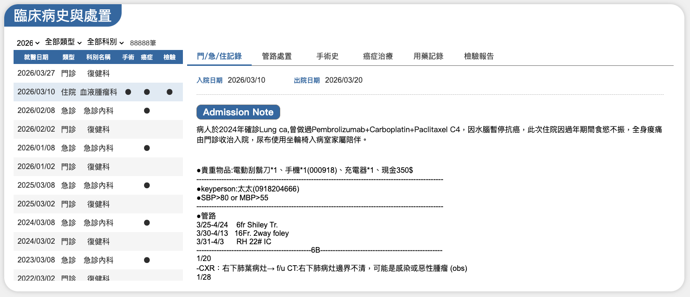
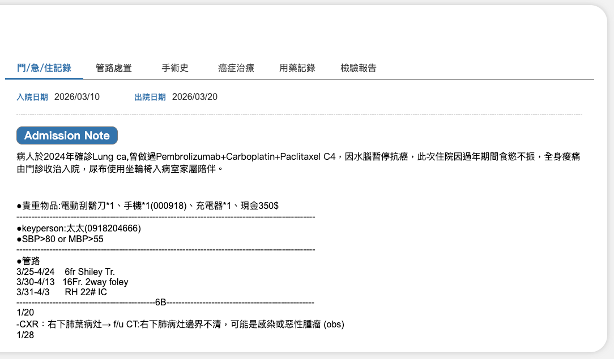
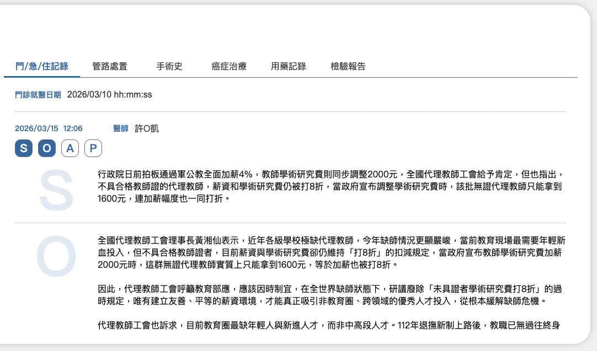
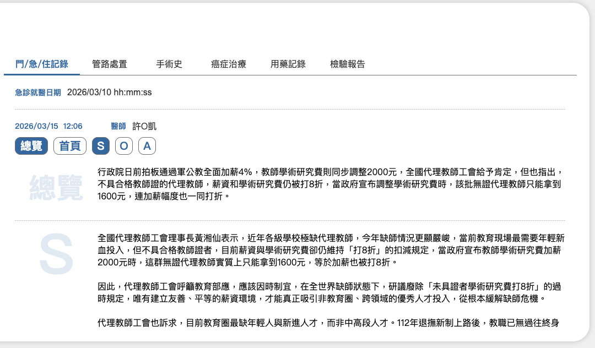
項目
內容
說明
資料撈取規則
1. 資料來源：HIS
- 門診醫囑 ＞ 門急病歷 ＞ 檢驗檢查處置&材料
- 住院醫囑 ＞ 電子病歷 ＞ 護理記錄 ＞ Kardex。
2. 管路處置這個頁籤不需要連動左側單則就醫時間，將今天＋往前5年的所有管路都列出來，排列順序由新排列到舊。
管路篩選
1. 全部
2. 引流管路
3. 其他管路
引流管路包含以下項目，其他則視為其他管路：
- NG-Rubber(鼻胃管)，顯示名稱
- Gastrostomy tube (胃造口管)
- Jejunostomy tube (空腸造口管)
- ND (鼻、十二指腸導管)
- Foley-Rubber (導尿管)
- Cystofix(膀胱造口管)
- Tracheostomy(氣管造口器)
- Endotracheal (氣管內管)
- Port-A(人工血管)
- PICC(末梢靜脈置入導管)
- HICKMAN

"新增註記”按鈕
治療師可透過新增註記功能記錄病患實際狀況，自動留存當下時間及填寫人的姓名，點選任一存在的記錄開啟填寫對話框時，可修改內容及刪除，但不可變更來自HIS的資料。
內容
1. 插管時間
2. 來源
3. 管路名稱
4. 部位
5. 狀態
6. 治療師註記
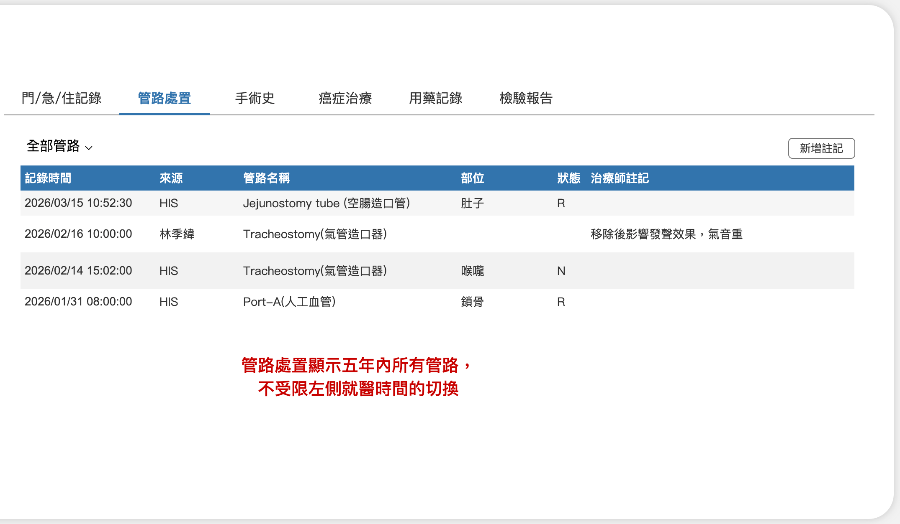
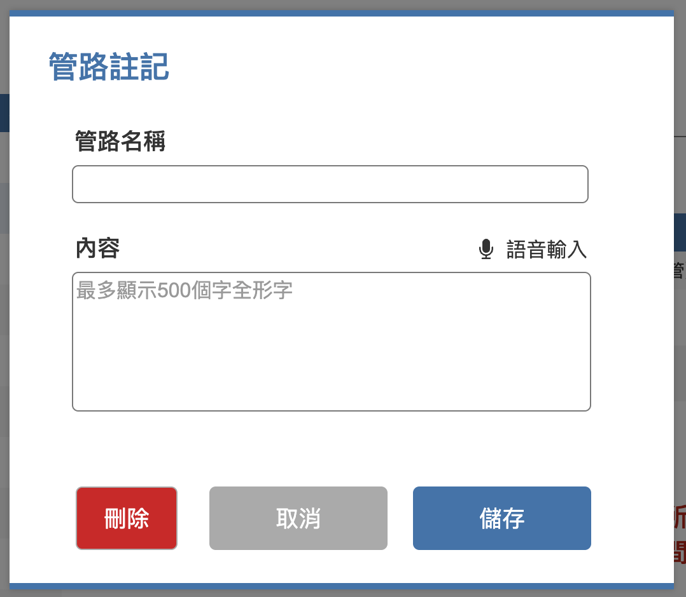
項目
內容
說明
資料撈取規則
1. 資料來源：HIS
- 門診及住院醫囑 ＞ 電子病歷 ＞ 手術報告或手術紀錄
- 門診及住院醫囑 ＞ 癌症中心 ＞ 手術/放射治療
2. 這個頁籤不需要連動左側單則就醫時間，將今天＋往前5年的所有手術都列出來，排列順序由新排列到舊。

手術資訊區
1. 首次手術日期
2. 手術備註
資料來源：HIS門診及住院醫囑＞癌症中心＞癌症中心治療計畫＞個管管案查詢＞手術/放射治療＞手術治療
手術歷程
1. 開刀日
2. 手術部位
3. 開刀診斷
4. 手術法
5. 手術說明
1. 1～4項的資料來源：HIS 門診及住院醫囑 ＞ 癌症中心 ＞ 手術/放射治療
2. 第5項的資料來源：門診及住院醫囑 ＞ 電子病歷 ＞ 手術報告或手術紀錄
3. 點選任一筆手術記錄開啟手術記錄的內容
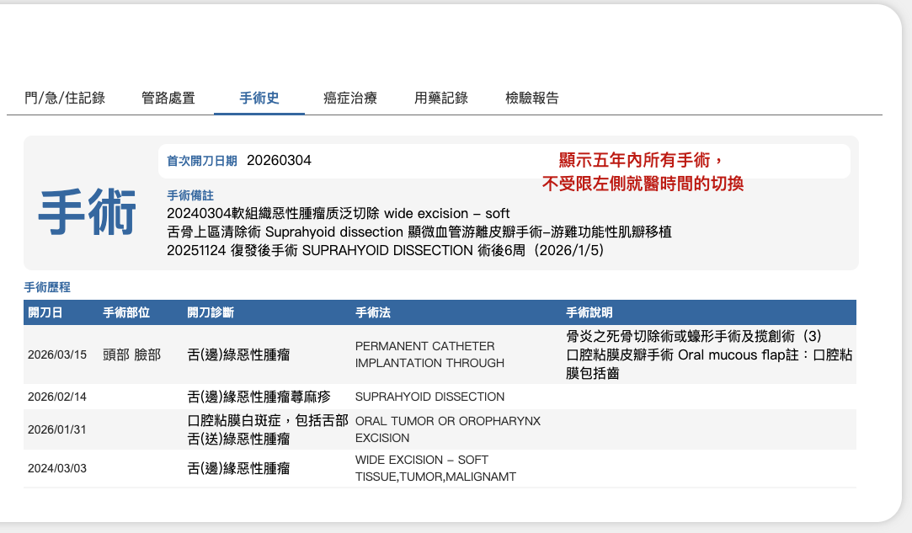
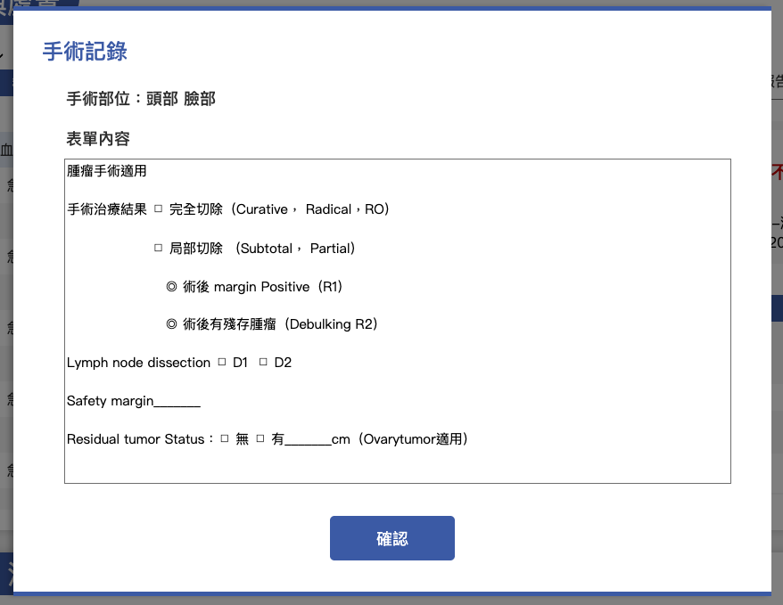
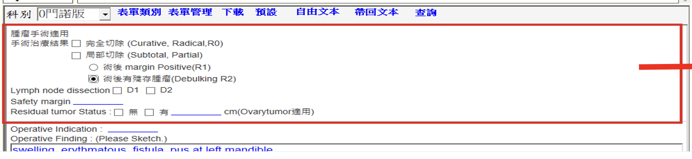
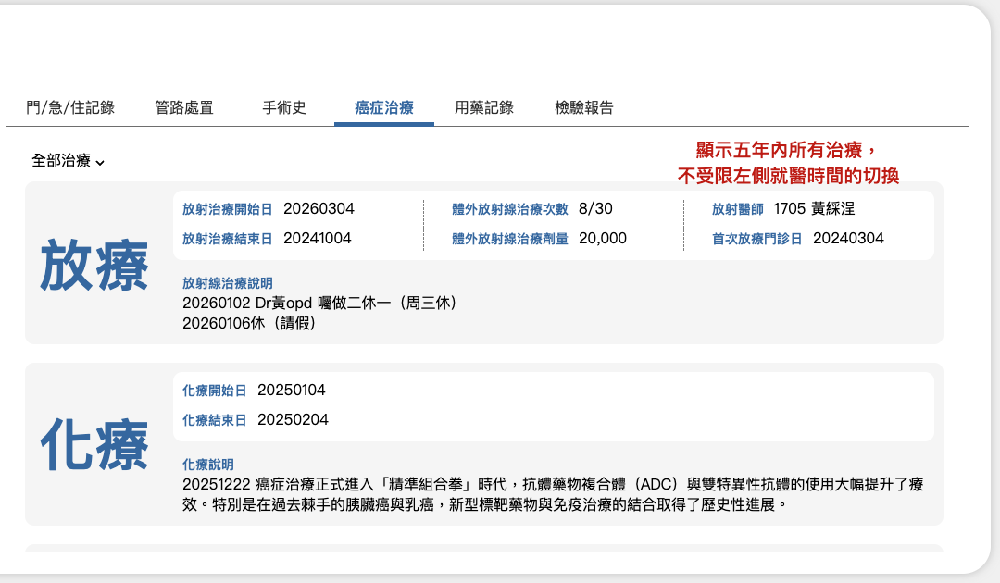
項目
內容
說明
資料撈取規則
1. 資料來源：HIS
- 門診及住院醫囑 ＞ 電子病歷 ＞ 手術報告或手術紀錄
- 門診及住院醫囑 ＞ 癌症中心 ＞ 手術/放射治療
2. 癌症治療這個頁籤不需要連動左側單則就醫時間，將今天＋往前5年的所有治療記錄都列出來，排列順序由新排列到舊。
治療類型篩選
1. 全部治療
2. 化學治療
3. 放射治療
1. 資料來源：HIS門診及住院醫囑＞癌症中心
2. 選擇任一類型後，下方資料區顯示對應的所有治療記錄，每一類型的每次治療(有開始及結束時間)自成一個資料區塊。
放療區塊
1. 放射治療開始日
2. 放射治療結束日
3. 體外放射治療次數：當次/總次數
4. 體外放射線治療劑量
5. 放射醫師：醫師代碼＋姓名
6. 首次放療門診日：yyyymmdd
7. 放射線治療說明
資料來源：癌症中心 癌症個案管理登錄的介面中放射治療區塊所有內容。
化療區塊
1. 化療
- 化療開始日
- 化療結束日
- 化療說明
2. 荷爾蒙治療
- 荷爾蒙開始日
- 荷爾蒙結束日
- 荷爾蒙說明
3. 免疫治療
- 免疫治療開始日
- 免疫治療結束日
- 免疫治療說明
4. 幹細胞移植
- 幹細胞移植開始日
- 幹細胞移植結束日
- 幹細胞移植說明
資料來源：癌症中心 癌症個案管理登錄的介面中化學治療區塊所有內容。
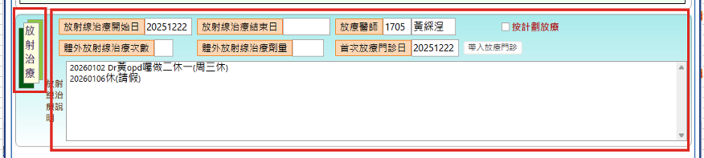
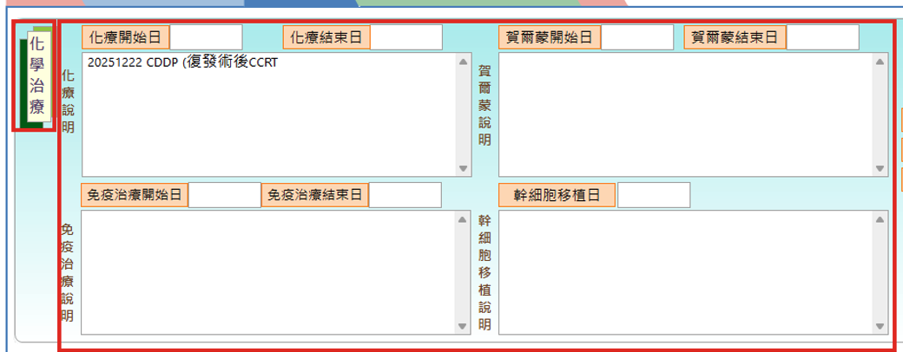
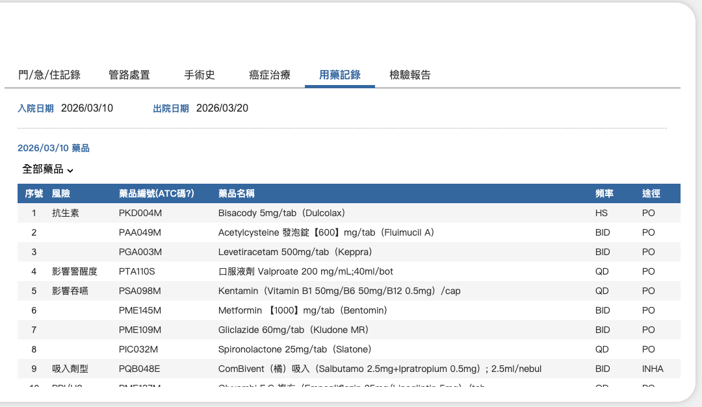
項目
內容
說明
開藥時間
1. 住院：入院日期 yyyy/mm/dd hh:mm:ss 及出院日期 yyyy/mm/dd hh:mm:ss
2. 急診：yyyy/mm/dd hh:mm:ss
3. 門診： yyyy/mm/dd hh:mm:ss
1. 資料來源：HIS 電子病歷 ＞ 用藥彙總 及 病人藥囑。
2. 門／急診顯示當次開藥日期、住院則將當次住院-出院整合成一筆左側的就醫清單，下方的清單再依開藥日期列表。
藥品類型篩選
1. 全部藥品
2. 抗生素
3. 影誊警醒度
4. 影善吞嚥
5. 吸入劑型
6. PPI/H2
1. 抓取藥物的ATC碼，再判斷屬於哪一類型的藥品
2. 藥物ATC碼對應請參照：
- 抗生素藥物：J01 (此頭碼下面的細項全部都要)
- 影響警醒度藥物：
- N03A：抗癲癇藥 Antiepileptics。
- N05BA：鎮定安眠藥 BZD。
- N02A：嗎啡類止痛藥 Opioids。
- M03B：肌肉鬆弛劑 Muscle relaxants (centrally acting agnets)
- A03B、G04BD：抗膽鹼或毒蕈鹼阻斷劑藥物 Anticholinergics (腸道解痙攣藥物/膀胱過動症藥物)。
- N06DA：阿茲海默症藥物 (Antiacetylcholinesterase)
- N04A：巴金森氏症藥物 (Anticholinergics)
- 影善吞嚥：
- N05A：典型抗精神分裂藥物 Typical Antipsychotics、非典型抗精神分裂藥物Atypical Antipsychotics、躁鬱症用藥 Bipolar。
- N03A：抗癲癇藥 Antiepileptics。
- N05BA：鎮定安眠藥 BZD。
- N02A：嗎啡類止痛藥 Opioids。
- M03B：肌肉鬆弛劑 Muscle relaxants (centrally acting agnets)。
- J01AA、J01CF、J01FF、J01FA、J04AB02：抗生素 Antibiotics (Tetracycline類/Dicloxacillin/Clindamycin/Erythromycin/Rifampin)。
- C01BA01：抗心律不整 Quinidine。
- N02BA01：阿斯匹靈 Aspirin。
- M05BA：骨質疏鬆藥（雙磷酸鹽）。
- B03A：鐵劑 Iron。
- R03DA04、R03DA05：氣管擴張劑 Theophylline/Aminophylline。
- M01AB、M01AE：消炎止痛藥 NSAID。
- A12BA01：鉀錠 (KCl)。
- A11G：維他命 C。
- A03B、G04BD：抗膽鹼或毒蕈鹼阻斷劑藥物 Anticholinergics (腸道解痙攣藥物/膀胱過動症藥物)。
- N06DA：阿茲海默症藥物 (Antiacetylcholinesterase)。
- N04A：巴金森氏症藥物 (Anticholinergics)。
- N06A：抗憂鬱藥 Antidepressants (包含三環抗憂鬱劑)。
- 吸入劑型：R03AC、R03AK、R03AL、R03BA、R03BB、R03BC(這6個頭碼下面的細項全部都要)。
- PPI/H2：
- A02BC(此頭碼下面的細項全部都算是PPI)。
- A02BA(此頭碼下面的細項全部都算是H2 blocker)。

藥品清單
1. 清單項目序號
2. 風險
3. 藥品編號(ATC碼)
4. 藥品名稱
5. 頻率
6. 途徑
依開藥日期列表，若藥品有對應上述的ATC碼，需標示風險類型，若沒有對應碼，風險欄位則留空白。
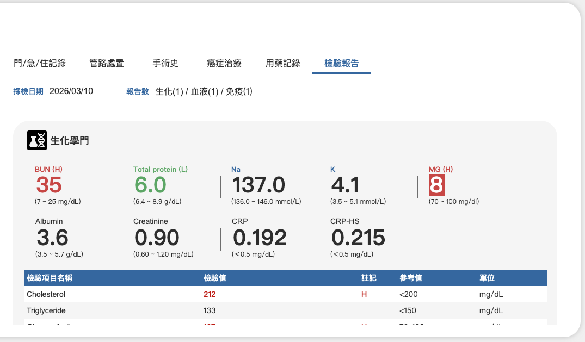
檢驗項目名稱
檢驗值
單位
參考值
項目
內容
說明
資料撈取規則
1. 資料來源：HIS 電子病歷 ＞ 檢驗報告
2. 連動左側單則就醫時間(開單日)對應的採檢日資料。
當次資訊
1. 採檢日：yyyy/mm/dd hh:mm
2. 報告數(顯示系統中報告數，單份報告中不限檢驗項目數)
- 生化(報告數) ／ 血液(報告數) ／ 免疫(報告數)
點擊生化／血液／免疫文字可快速跳到區塊錨點。

生化學門區塊
1. 上方常查閱的檢查項目(英文字母大小寫依下列規則)：
- BUN
- Total protein
- Na
- K
- MG
- Albumin
- Creatinine
- CRP
- CRP-HS
2. 下方列表欄位：
- 檢查項目名稱
- 檢驗值
- 註記
- 參考值
- 單位
1. 區塊顯示說明：
- 上方區塊顯示最常查閱的檢查項目，5個項目為一列，只顯示有檢驗報告的項目，沒有的項目不預留空位由下一項目遞補排序的位置。
- 下方表列其他檢查項目，格式和HIS呈現相似。
2. 檢驗值提示說明：
- 當檢驗項目的檢驗值高於參考值，數值顯示紅色(色碼#D04B4B)、粗體，且註記H。
- 當檢驗項目的檢驗值低於參考值，數值顯示綠色(色碼#68B06B)、粗體，且註記L。
- 當檢驗項目的檢驗值過高或過低於參考值且已達危險狀態，數值區塊底色顯示紅色(色碼#D04B4B)、文字為白色(#FFFFFF)、粗體。

血液學門區塊
1. 上方常查閱的檢查項目(英文字母大小寫依下列規則)：
- WBC
2. 下方列表欄位：
- 檢查項目名稱
- 檢驗值
- 註記
- 參考值
- 單位
同上
免疫與感染學門區塊
1. 上方常查閱的檢查項目(英文字母大小寫依下列規則)：
- CEA
- PSA
- AFP
- CA125
- EBV
2. 下方列表欄位：
- 檢查項目名稱
- 檢驗值
- 註記
- 參考值
- 單位
同上
(右區塊) Tab01_門/急/住記錄
(右區塊) Tab02_管路處置
(右區塊) Tab03_手術史
(右區塊) Tab04_癌症治療
(右區塊) Tab05_用藥記錄
(右區塊) Tab06_檢驗報告